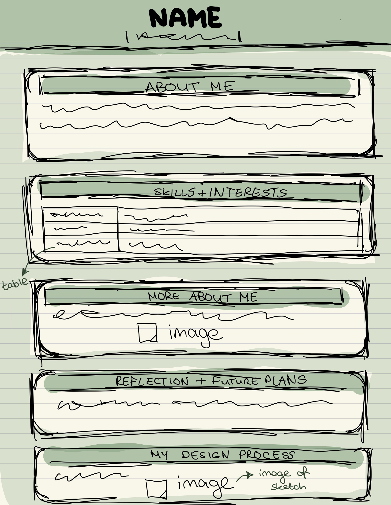

About Me
Hi, I'm Laura Burke, a first-year Interaction Design student at the University of Limerick. I chose this course because I’ve always been interested in how design impacts the way people engage with technology. From intuitive interfaces to seamless digital experiences, I love exploring ways to make the web more user-friendly and accessible.
I’m particularly interested in UX/UI design, front-end development, and graphic design. I enjoy experimenting with layouts, typography, and color schemes to create visually appealing designs. I also have experience using Affinity Suite to work on branding and digital graphics.
Outside of my coursework, I like creating interactive prototypes, exploring new design trends, and refining my web development skills.
Skills & Interests
| Skill/Interest | Details |
|---|---|
| HTML & CSS | Learning web development with Bootstrap |
| Graphic Design | Experience with Affinity Suite (Photo, Designer, Publisher) |
| UX/UI Design | Interested in user experience & accessibility |
More About Me
I have a strong passion for design that goes beyond aesthetics—I love creating meaningful, accessible digital experiences. I’m particularly interested in UX/UI design and accessibility, ensuring that technology is inclusive and user-friendly for everyone.
I enjoy exploring emerging trends in web development, experimenting with motion design, and refining my front-end coding skills. My interest in human-computer interaction drives me to design intuitive and engaging digital interfaces that enhance user experiences.
Outside of my coursework, I like working on creative projects that combine functionality and visual storytelling, always striving to create designs that are both impactful and accessible.
Reflection & Future Plans
This portfolio represents my current skills, interests, and aspirations in interaction design. Through this project, I’ve gained a deeper understanding of structuring web content, enhancing user experience, and creating visually cohesive designs.
As I continue to develop my skills, I aim to expand this portfolio by incorporating more interactive elements, refining my design approach, and showcasing future projects.
In the long term, I hope to specialize in UX/UI design, with a strong focus on accessibility and user-centered experiences. My goal is to continuously improve, experiment with new design techniques, and build digital experiences that are both functional and engaging.
My Design Process
Before building this portfolio, I sketched out a wireframe to structure my content and ensure a user-friendly layout. This helped me visualize how different elements, such as sections, headings, and images, would be arranged.
I focused on a minimalistic yet engaging design with a sage green color scheme to reflect my style. By using Bootstrap, I ensured that the site is fully responsive, adjusting seamlessly to different screen sizes.
Below is my initial boxified wireframe sketch, which guided my design choices throughout this project.
